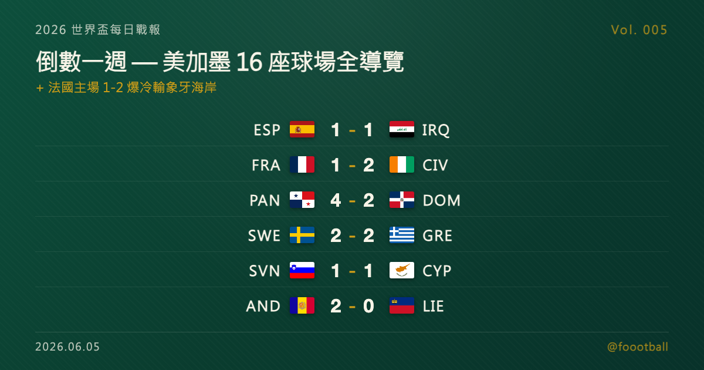

世界盃倒數一週：你在電視上看不到 MetLife、SoFi、AT&T——美加墨 16 座球場全導覽

2026 世界盃每日戰報 Vol. 005
§1 即時比分戰報（6/4 國際熱身賽窗口）
| 賽事 | 比分 | 場館 | 焦點 |
|---|---|---|---|
| 🇪🇸 西班牙 — 🇮🇶 伊拉克 | 1 - 1 | 拉科魯尼亞 Riazor 球場 | 費蘭·托雷斯 16' 先開紀錄、多斯基 27' 世界級遠射扳平 |
| 🇫🇷 法國 — 🇨🇮 象牙海岸 | 1 - 2 | 南特 Beaujoire 球場 | 切爾基 45'、多埃 53'、阿馬德·迪亞洛 84' 絕殺 |
| 🇵🇦 巴拿馬 — 🇩🇴 多明尼加 | 4 - 2 | 巴拿馬城 Rommel Fernández | 6 球大戰，巴拿馬世盃前最後主場拉開 |
| 🇸🇪 瑞典 — 🇬🇷 希臘 | 2 - 2 | 索爾納 Strawberry Arena | 約克雷斯破門、尼爾森 69'、馬蘇拉斯補時扳平 |
| 🇸🇮 斯洛維尼亞 — 🇨🇾 賽普勒斯 | 1 - 1 | 盧布爾雅那 Stožice | 齊奧尼斯 7' 先進、德爾庫希奇 65' 扳平 |
| 🇦🇩 安道爾 — 🇱🇮 列支敦士登 | 2 - 0 | 恩坎普 FAF 球場 | 馬丁內斯 72'、阿拉耶斯 79'(P) |
6 場國際熱身賽橫跨歐洲與中美洲。最受關注的是法國主場 1-2 不敵象牙海岸——非洲勁旅靠多埃傳射、阿馬德·迪亞洛 84 分鐘絕殺，在世界盃前一週給名門上了一課；西班牙派出大幅輪換的陣容主場 1-1 被伊拉克逼平。巴拿馬在世盃前最後一場主場熱身以 4-2 收下多明尼加；瑞典、斯洛維尼亞各被對手補時／下半場扳平踢和；安道爾則在老將普若爾的告別戰主場 2-0 擊敗列支敦士登。今天的重點不在單場比分，而在 §4——距離 6/11 開幕只剩一週，我們把美加墨 16 座球場一次講清楚。
§2 排行榜：熱身窗口的狀態檢查（倒數期）
倒數期的看點不在積分（會內賽還沒開打），而在世界盃前最後一輪熱身賽各隊交出的狀態，以及名單的最終定型。
- 🇫🇷 法國主場 1-2 輸象牙海岸：本日最有份量的結果。象牙海岸是本屆已晉級世界盃的非洲勁旅，本場客場逆轉一支奪冠熱門，迪亞洛 84 分鐘的絕殺尤其搶眼。對法國而言，這是出征前一次不太好看的對帳單。
- 🇪🇸 西班牙 1-1 伊拉克：歐洲國家盃衛冕冠軍西班牙大幅輪換新兵試陣，費蘭·托雷斯先開紀錄，但被亞洲球隊伊拉克的一記世界級遠射扳平。熱身賽性質濃，重點在練兵而非結果。
- 🔥 戲劇性比分：巴拿馬 4-2 多明尼加（中美洲 6 球大戰）、瑞典 2-2 希臘（末段被馬蘇拉斯補時追平）。
- 名單面：FIFA 各會員協會的 26 人最終名單已於 6/2 統一公開（詳見 Vol. 002），現進入「首戰前 24 小時可因傷替補」的微調期。
§3 賽事摘要
🇪🇸 西班牙 1 - 1 伊拉克 @ Riazor, A Coruña：費蘭·托雷斯（Ferran Torres）16 分鐘為輪換陣容的西班牙先開紀錄，伊拉克靠多斯基（Merchas Doski）27 分鐘一記世界級遠射扳平。西班牙派出多名新兵於里亞索爾球場試陣，最終 1-1 收場。
🇫🇷 法國 1 - 2 象牙海岸 @ Stade de la Beaujoire, Nantes：切爾基（Rayan Cherki）上半場補時 45 分鐘為法國先進，象牙海岸下半場由多埃（Guéla Doué）53 分鐘扳平、阿馬德·迪亞洛（Amad Diallo）84 分鐘絕殺逆轉。象牙海岸客場 2-1 拿下法國，是本日最具話題的結果。詳見 §2。
🇵🇦 巴拿馬 4 - 2 多明尼加 @ Estadio Rommel Fernández, Ciudad de Panamá：巴拿馬在世界盃前最後一場主場熱身賽多點開花，由羅德里格斯、葛瑞菲斯、瓦特曼、巴里亞等人建功，4-2 擊退鄰國多明尼加（馬里安諾·迪亞茲、賈帕為多明尼加進球）。本日唯一一場 6 球大戰。
🇸🇪 瑞典 2 - 2 希臘 @ Strawberry Arena, Solna：瑞典前鋒約克雷斯（Viktor Gyökeres）與尼爾森（Gustaf Nilsson，69'）建功，希臘則靠齊米卡斯（Kostas Tsimikas）與馬蘇拉斯（Giorgos Masouras）補時扳平，雙方 2-2 言和。
🇸🇮 斯洛維尼亞 1 - 1 賽普勒斯 @ Stadion Stožice, Ljubljana：賽普勒斯齊奧尼斯（Marios Tzionis）7 分鐘先進，斯洛維尼亞下半場由德爾庫希奇（Vanja Drkušić）65 分鐘扳平，主場 1-1 握手言和。
🇦🇩 安道爾 2 - 0 列支敦士登 @ Estadi de la FAF, Encamp：安道爾在隊史老將普若爾（Marc Pujol）的國家隊告別戰，由馬丁內斯（Álex Martínez）72 分鐘、阿拉耶斯（Jordi Aláez）79 分鐘點球建功，2-0 拿下列支敦士登。
§4 焦點導覽：你在電視上看不到 MetLife、SoFi、AT&T——美加墨 16 座球場怎麼看
距離 6/11 開幕剩下一週。先講一件很多人開賽才會發現的怪事：你在轉播裡，看不到 MetLife、SoFi、AT&T 這些你熟悉的球場名字。
原因是 FIFA 的商業規則。世界盃有自己的官方贊助商，賽事期間不能在場館名稱上替「非贊助商」的企業免費打廣告——所以 FIFA 會把所有冠名贊助的球場「去商標化」，改用地理名稱。於是這屆你會在轉播、門票、場邊看板上看到的是這些名字：
- MetLife Stadium（紐約／紐澤西，決賽場地）→ FIFA 賽事名 New York New Jersey Stadium
- SoFi Stadium（洛杉磯）→ Los Angeles Stadium
- AT&T Stadium（達拉斯）→ Dallas Stadium
- Mercedes-Benz Stadium（亞特蘭大）→ Atlanta Stadium
- Levi's Stadium（舊金山灣區）→ San Francisco Bay Area Stadium
少數例外是名稱本身不是企業冠名的，例如溫哥華的 BC Place——它沒有企業冠名問題，FIFA 賽事名仍保留 BC Place 字樣，作 BC Place Vancouver。記住這個規則，開賽看轉播就不會一頭霧水。
16 座球場、3 個國家、一週後開打。 這屆是史上第一次三國合辦、也是第一次擴軍到 48 隊、104 場比賽的世界盃，6/11 到 7/19 橫跨 39 天。16 座球場的分布是美國 11 座、墨西哥 3 座、加拿大 2 座，地理跨度極大——從墨西哥城海拔約 2,200 公尺的高地，到南方達拉斯、休士頓、亞特蘭大為了對抗六七月酷暑而採用的「可開合屋頂＋空調」場館，再到北方與加拿大的露天球場。
兩座球場一定要先記住：
🇲🇽 阿茲特克球場（FIFA 賽事名 Mexico City Stadium）——開幕戰場地、世界盃史上唯一的「三朝元老」。 它是全世界唯一一座辦過三屆男足世界盃的球場（1970、1986，加上 2026），墨西哥隊將在 6/11 在這裡對南非踢開幕戰。球場海拔約 2,200 公尺，高地稀薄空氣對體能與長傳球路都是實打實的變數。順帶一提，它也是這屆「三個名字」最複雜的場館：球迷熟悉的是 Azteca（阿茲特克），2025 年起商業冠名改為 Estadio Banorte，而 FIFA 賽事期間又會去商標化稱為 Mexico City Stadium。場館近期經過大規模整修後重新啟用。
🇺🇸 MetLife Stadium（FIFA 賽事名 New York New Jersey Stadium）——決賽場地，也是 16 座之中容量最大的一座。 7/19 的冠軍戰會在這座位於紐澤西、FIFA 賽事容量約 7.9 萬人的露天球場上演。世界盃的最後一場、新王登基的舞台就在這裡。
規模與屋頂，決定了比賽的「體感」。 先說一個常被混淆的點：球場「平日建築容量」與「FIFA 世界盃賽事容量」是兩回事——世界盃會為轉播機位、媒體區、商業接待與看台改裝而縮減席次，所以官方賽事容量普遍低於你在維基百科查到的數字。以 FIFA 官方賽事容量計，最大的是決賽場地 MetLife（約 78,600），最小的是多倫多 Toronto Stadium（BMO Field，約 44,300）。最典型的落差是達拉斯 Dallas Stadium（AT&T）：它平日常見座席約 8 萬、可因活動配置擴充到 10 萬以上，但 FIFA 賽事淨容量約 7.0 萬。屋頂則是另一個隱藏變數——達拉斯、休士頓、亞特蘭大、溫哥華等可開合屋頂或空調場館，在炎熱時段能把比賽搬進「室內」，露天球場則得跟天氣與日照硬碰硬，這會直接影響分組賽日間場次的比賽節奏。
下面是這屆 16 座球場的完整對照（容量採 FIFA 官方賽事淨容量，由大到小排序），建議收藏，開賽對照轉播看名字就不會錯亂：
| FIFA 賽事名 | 常用／冠名 | 城市（國家） | FIFA 賽事容量 |
|---|---|---|---|
| New York New Jersey Stadium | MetLife Stadium | 東盧瑟福（美國） | 78,576｜露天｜決賽｜最大 |
| Mexico City Stadium | Estadio Azteca／Banorte | 墨西哥城（墨西哥） | 72,766｜開幕戰｜高地 |
| Dallas Stadium | AT&T Stadium | 阿靈頓（美國） | 70,122｜可開合屋頂 |
| Los Angeles Stadium | SoFi Stadium | 英格爾伍德（美國） | 69,650｜固定頂棚 |
| San Francisco Bay Area Stadium | Levi's Stadium | 聖塔克拉拉（美國） | 69,391｜露天 |
| Houston Stadium | NRG Stadium | 休士頓（美國） | 68,311｜可開合屋頂 |
| Kansas City Stadium | Arrowhead Stadium | 堪薩斯城（美國） | 67,513｜露天 |
| Atlanta Stadium | Mercedes-Benz Stadium | 亞特蘭大（美國） | 67,382｜可開合屋頂 |
| Philadelphia Stadium | Lincoln Financial Field | 費城（美國） | 65,827｜露天 |
| Seattle Stadium | Lumen Field | 西雅圖（美國） | 65,123｜露天 |
| Miami Stadium | Hard Rock Stadium | 邁阿密花園（美國） | 64,091｜露天 |
| Boston Stadium | Gillette Stadium | 福克斯堡（美國） | 63,815｜露天 |
| Monterrey Stadium | Estadio BBVA | 蒙特雷（墨西哥） | 50,113｜露天 |
| BC Place Vancouver | BC Place | 溫哥華（加拿大） | 48,821｜可開合屋頂 |
| Guadalajara Stadium | Estadio Akron | 瓜達拉哈拉（墨西哥） | 44,330｜露天 |
| Toronto Stadium | BMO Field | 多倫多（加拿大） | 44,315｜露天｜最小 |
把這 16 座球場、它們的兩套名字，以及屋頂與海拔的差異記在心裡，這屆世界盃的轉播你會看得比別人更懂。
§5 明天看點
倒數最後一週，預期還有零星熱身賽收尾，各隊將陸續抵達美加墨、進入賽前集訓與場地適應。我們會持續更新到 6/11 開幕。
每日戰報追：https://medium.com/@foootball 賽程訂閱站：https://foootball.twtools.cc/
Tags：世界盃, 2026 世界盃, 美加墨世界盃, 足球, 世界盃球場, 阿茲特克球場, MetLife
常見問題
為什麼世界盃轉播看不到 MetLife、SoFi、AT&T 這些球場名字？
因為 FIFA 的商業規則：賽事期間不能在場館名稱上替非贊助商企業免費打廣告，所以會把冠名贊助球場「去商標化」改用地理名稱。例如 MetLife Stadium 改稱 New York New Jersey Stadium、SoFi Stadium 改稱 Los Angeles Stadium、AT&T Stadium 改稱 Dallas Stadium。
2026 世界盃的開幕戰與決賽在哪座球場？
開幕戰在墨西哥城的阿茲特克球場（FIFA 賽事名 Mexico City Stadium），墨西哥隊將於 6 月 11 日在此對南非；它是全世界唯一辦過三屆男足世界盃的球場（1970、1986、2026）。決賽於 7 月 19 日在紐澤西的 MetLife Stadium（FIFA 賽事名 New York New Jersey Stadium）舉行，FIFA 賽事容量約 7.86 萬人，是 16 座之中最大的一座。
2026 世界盃共有幾座球場？分布在哪些國家？
2026 世界盃共有 16 座球場，分布在美國 11 座、墨西哥 3 座、加拿大 2 座。這屆是史上第一次三國合辦、也是第一次擴軍到 48 隊、104 場比賽，自 6 月 11 日至 7 月 19 日橫跨 39 天。最小的球場是多倫多 Toronto Stadium（BMO Field，FIFA 賽事容量約 44,315）。